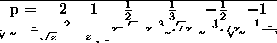
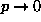
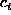
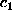
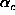
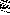
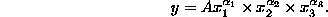

Class 8. Stat701 Fall 1997
Multiple regression, transformation and prediction.
From last time:
prediction in regression.
Todays class.

- For next time read Berndt 3.1 - 3.6. Look for ideas and models, not
necessarily derivations.
- Transformation ideas

- Upside: make life easy both practically
(problems may evaporate, e.g. outliers become less severe) and
theoretically (normal theory results, t-tests, p-values are credible)
- Downside: may be hard to interpret
- Rationale:
- Symmetry - ``middle'' well defined
- Easier to compare with normal (ie heavy tailed).
- Methodology may require symmetry (ie normal theory)
- Facilitates comparisons between observations that are on
the same scale but far apart, (ie changes in Microsoft sales
and changes in Apples).
- May be more interpretable - aid in decision making. Unit
costs rather than total costs.
- May put data onto a more useful scale, ie transform proportions
with a logit transform.
- Can make comparisons easier by stabilizing variance
- Can transform to obtain additivity (ie Cobb-Douglas)
- Interaction may only be present due to modeling on the wrong scale,
so that transformation erases the need for interaction.
A family of transforms - the power transforms
Stretching the axis differentially.

Unfortunately does not include ln.
Fix up: consider

Take the limit as  and you get ln(z).
Need to know the shape of these curves. Also see the bulging rule
handout.
The most commonly used is probably the log-transform.
Reasons:
- Good interpretability in terms of percentage changes.
- Turns multiplicative relationships into additive ones.
Models from Chapter 3.
The learning curve model
Allows you to investigate the impact of learning on production costs.

where
-  = unit costs of production in time period t.
-  = unit costs of production in time period 1.
- = cumulative units of output produced up to time period t.
-  = elasticity of unit cost with respect to cumulative volume.
-  = stochastic disturbance term (we call it ).
Rewrite in log form to get an ``additive model''.
The cost function derived from a Cobb-Douglas production function
Allows you to estimate returns to scale.
Assuming a cost minimizing producer.
Production function.

Cost function.

r is returns to scale. C is total cost. are partial returns to
scale.
Richard Waterman
Mon Sep 29 23:51:22 EDT 1997